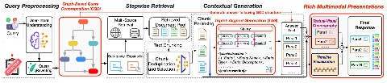
Publications
2026
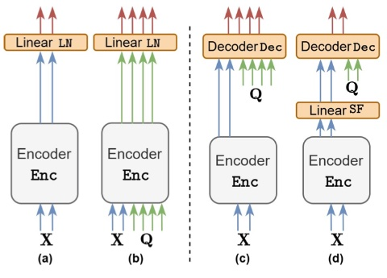
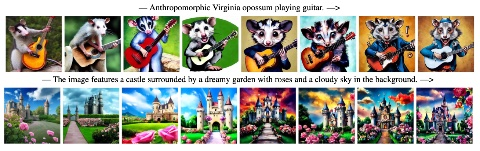
2025
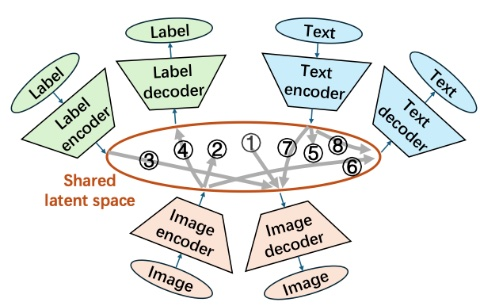
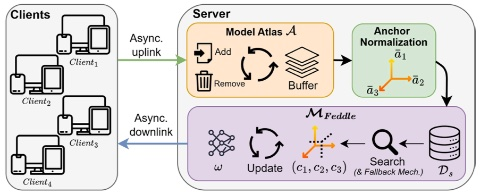
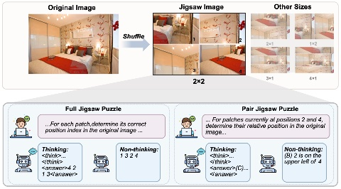
Jigsaw-R1: A Study of Rule-based Visual Reinforcement Learning with Jigsaw Puzzles
TMLR 2025* = Co-first authors paper ↗
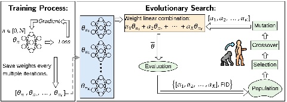
Linear Combination of Saved Checkpoints Makes Consistency and Diffusion Models Better
ICLR 2025* = Co-first authors paper ↗
2024
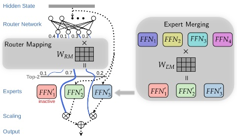
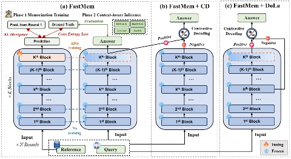
FastMem: Fast Memorization of Prompt Improves Context Awareness of Large Language Models
EMNLP Findings 2024* = Co-first authors paper ↗
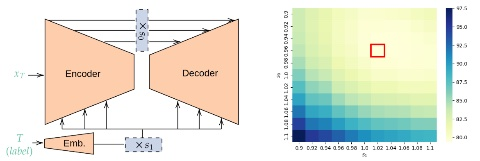
Rescaling Intermediate Features Makes Trained Consistency Models Perform Better
Tiny Paper@ICLR 2024 paper ↗
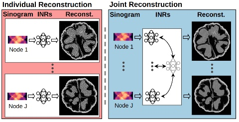
Implicit Neural Representations for Robust Joint Sparse-View CT Reconstruction
TMLR 2024* = Co-first authors paper ↗
2023
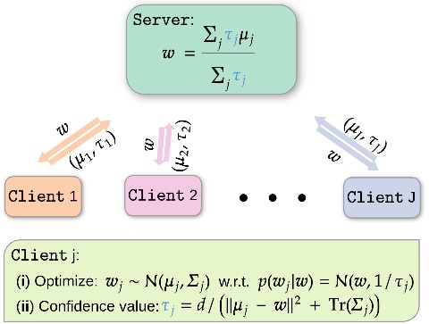
Confidence-aware Personalized Federated Learning via Variational Expectation Maximization
CVPR 2023* = Co-first authors paper ↗
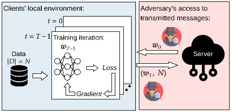
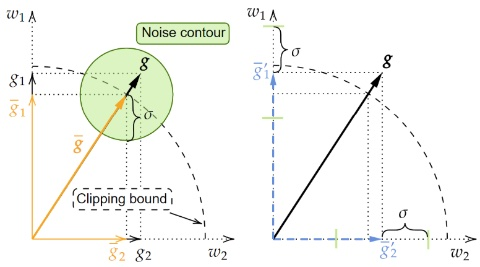
2021
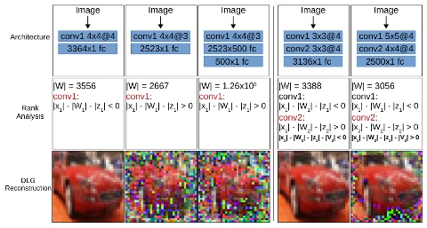
2019
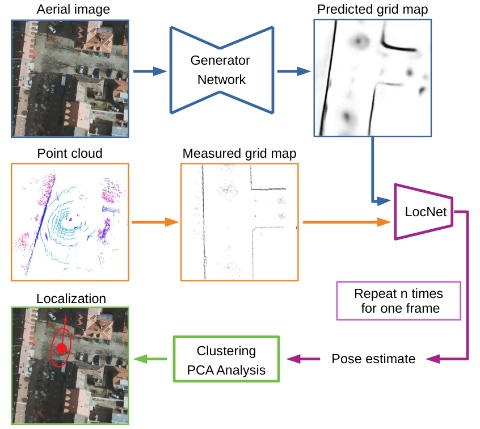
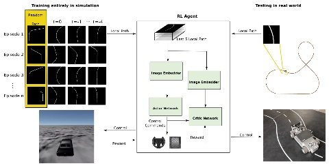